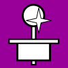
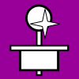

Basic Parts
This section summarizes the main components and how they function together in a basic arcade controller. It is composed of some basic parts not all that complicated.
Switches
Basically a switch is an on-off device usually working by completing an electrical circuit in one position and cutting it in the other. A momentary contact switch is one that must be pressed to engage and springs back when released; these are used by simple joysticks and buttons. A microswitch is a small momentary contact switch requiring little force; the actuation of a standard microswitch uses a small button with a distinct clicking sound (and feel).
Joystick and button switches have at least two terminals (also called lugs); one attaches to a signal and the other to a ground. When the switch is pressed, the current of electricity is connected and the attached signal/command is engaged; when it is released, the circuit is cut and the signal is disengaged. This completed circuit is how the commands of simple joysticks and buttons are activated on a PCB board. It does not matter where the ground and signal are attached to the switch as long as the appropriate circuit is set for the desired engagement.
Many microswitches have three terminals, with the third terminal making a completed circuit when the switch is not engaged. Technically speaking for most microswitches, the L-shaped terminal on the side is the signal terminal, the terminal nearest it is the ground terminal, and the other terminal is an inverse ground terminal. The inverted terminal is not generally used in controller making. Some microswitches have the two ground terminals in opposite positions.
PCB
PCB stands for “printed circuit board”. It is a highway of conductive paths on a nonconductive panel connected to outlets that send and receive electronic commands. There are many different signals with their corresponding unique paths and usually a single ground (also called a common) that runs throughout the PCB. When a circuit is completed between the ground and a signal, a part of the processor is activated and its corresponding command is sent. The various commands are sent through an attached cord or remote to the computer or console.
The PCB is often called the interface because it is what allows joysticks and buttons to communicate with computers. PCBs can be extracted from cheap controllers and keyboards, or purchased specially for joystick controllers.
Wire
Wire is conductive string, generally made of metal, often insulated by a nonconductive cover. In making a controller, it is used to connect the terminals of switches to the ground and desired signals on a PCB. At least four wires are also used in the cord for PCBs.
Joystick
A joystick is a directional control stick suspended on a pivot. Most joysticks activate directional commands by pressing a switch placed opposite and below the pivot. Joysticks indicating varying degrees of each direction (analog) require more complex sensors.
Buttons
A button (also called a “pushbutton” in arcade parts) is an embellished switch giving a simple command. Most are large and round, attaching to a round hole in a panel. Some are designed to plunge into an attached standard microswitch, while others have a smaller simple switch set inside them with a pair of terminals sticking out the bottom.
Control Panel
The control panel is a flat, durable plate into which the directional device and buttons are built. It is usually made of wood, metal, or plastic, often covered by acrylic glass with images printed on paper sandwiched below it for decoration.
Panel Support
In most circumstances, a control panel cannot stand on its own. Some kind of structure needs to suspend it. By far, the most common way to do this for a controller is with a box, but there are other ways to accomplish this. A control panel together with a box is called a case.
Put Together
So the workings of a basic joystick controller are as follows: The joystick and buttons are mounted in a desired layout to a panel which is supported by usually a box. The joystick and buttons contain switches, one for each button and one for each of the four directions of the joystick, engaged by the movement of those devices. Each switch is connected to two wires, one to the ground and one to a specific signal. These wires are connected to a PCB which emits specific commands when a circuit is completed between the ground and the corresponding signal. The PCB is connected to a cord or remote that sends the commands to a computer or console.


 
